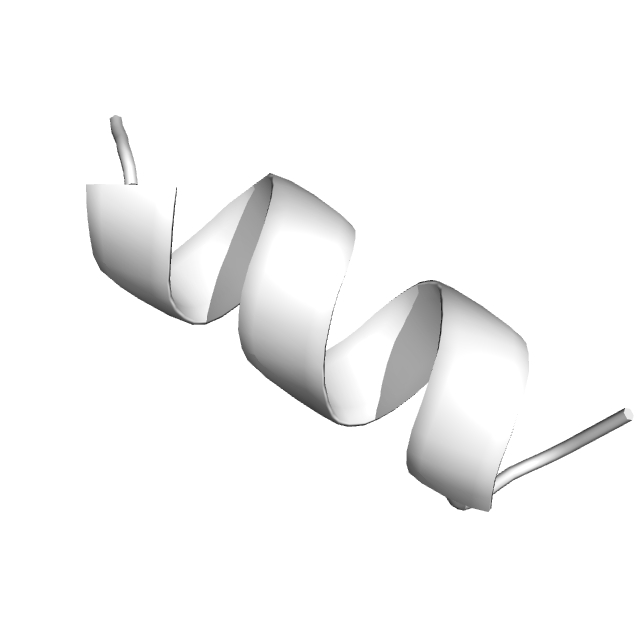

<div class="wrap-all">
  <mat-toolbar>
    <span class="flex-spacer"></span>
    <div class="logo-wrapper">
      <div class="curved-corner-topright"></div>
      <div class="logo-container" matTooltip="Draw Ramachandran plot for any RCSB PDB protein structure.">
        <a routerLink="">
          
        </a>
        <span>Ramachandran plots</span>
      </div>
      <div class="curved-corner-topleft"></div>
    </div>
    <span class="flex-spacer"></span>
  </mat-toolbar>

  <main class="container content-wrapper">
    <router-outlet></router-outlet>
  </main>

  <footer class="container footer d-flex flex-wrap justify-content-center justify-content-md-between align-items-center py-3 my-4 border-top">
<!--    <div class="footer d-flex flex-wrap justify-content-between align-items-center py-3 my-4 border-top">-->
      <div class="col-md-4 d-flex align-items-center">
        <a routerLink="" class="mb-3 me-2 mb-md-0 text-muted text-decoration-none lh-1">
          
        </a>
        <span class="mb-3 mb-md-0 text-muted">{{date | date:'YYYY'}}
          <mat-icon inline>fiber_manual_record</mat-icon> Developed by Nikita Gryzunov <mat-icon inline>fiber_manual_record</mat-icon> Free Use</span>
      </div>
<!--    </div>-->
  </footer>
</div>
